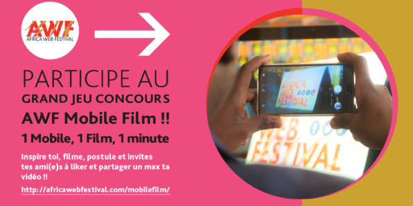
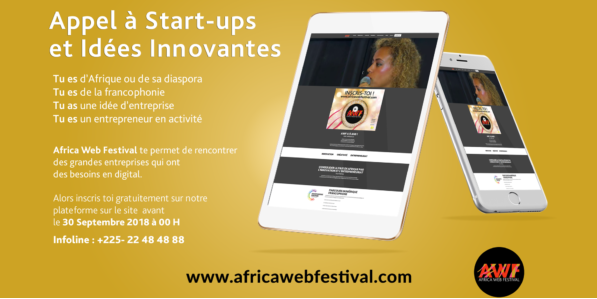

AWF A 5 ANS !
RENDEZ-VOUS A NE PAS MANQUER!
29, 30 NOVEMBRE & 1er DECEMBRE 2018
AU PALAIS DE LA CULTURE DE TREICHVILLE
mettre de l'avant les africains qui sur leurs continent développent des solutions innovantes et / ou technologiques qui contribuent à pérenniser la paix dans leurs différents milieux.
INNOVATION
CRÉATIVITÉ
ENTREPRENEURIAT
Retrouvez toute l'actualité de l'Africa Web Festival en cliquant sur le bouton ci-dessous
AWF CONCOURS
AWF APPEL A START-UPS
Découvrez quelques visages de nos chers panélistes pour AWF2018
KAMAGATE
Consultant Stratégie Web
Associé - Arche Innovation
Designer graphique de formation
Marketing Research Consultant & Digital Strategist
Découvrez dans une autre page dediée tous les autres intervenants de l'AWF2018